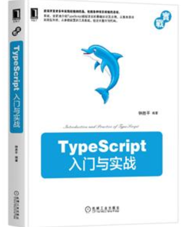

TypeScript


🏮 祝所有开发者：牛年大吉！🏮
 TypeScript 4.1 (November 19, 2020)
|
版本发布说明
TypeScript 4.1 (November 19, 2020)
|
版本发布说明
:heavy_check_mark: TypeScript语言用于大规模应用的JavaScript开发。 :heavy_check_mark: TypeScript支持类型，是JavaScript的超集且可以编译成纯JavaScript代码。 :heavy_check_mark: TypeScript兼容所有浏览器，所有宿主环境，所有操作系统。 :heavy_check_mark: TypeScript是开源的。
:new::new::new:
 ISBN 9787111669722
各位朋友们，本人近期出版了《TypeScript入门与实战》一书。在该书中，尝试着尽可能完整地介绍TypeScript语言的基础知识，并结合了一些本人的使用经验和体会。它主要面向的是TypeScript语言的初级和中级使用者。
本人还处于TypeScript语言的学习阶段，可能存在理解错误的地方，还请大家指正，一起进步。此外，由于这是本人人生中出版的第一本书，难免会有纰漏，请大家多多包涵！
如果觉得不错可以微信打赏哟 <3
目录
- 快速上手
- 手册
- 手册（进阶）
- 手册（v2）
- 如何书写声明文件
- JavaScript
- 工程配置
- Wiki
- 新增功能
- TypeScript 4.1
- TypeScript 4.0
- TypeScript 3.9
- TypeScript 3.8
- TypeScript 3.7
- TypeScript 3.6
- TypeScript 3.5
- TypeScript 3.4
- TypeScript 3.3
- TypeScript 3.2
- TypeScript 3.1
- TypeScript 3.0
- TypeScript 2.9
- TypeScript 2.8
- TypeScript 2.7
- TypeScript 2.6
- TypeScript 2.5
- TypeScript 2.4
- TypeScript 2.3
- TypeScript 2.2
- TypeScript 2.1
- TypeScript 2.0
- TypeScript 1.8
- TypeScript 1.7
- TypeScript 1.6
- TypeScript 1.5
- TypeScript 1.4
- TypeScript 1.3
- TypeScript 1.1
- Breaking Changes
TypeScript手册官方英文版
TypeScript语言规范
期待你为翻译做出贡献:)